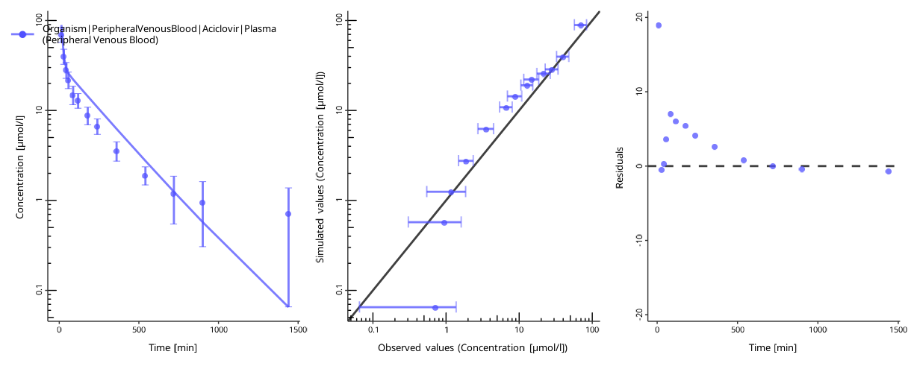

Parameter estimation problems
Biosimulation models include numerical parameters that determine the outputs of the model. Often, the values of these parameters are not known in advance and have to be identified by matching possible model outputs to the observed data. Finding parameter values that best match the observed data is called parameter identification.
The ospsuite.parameteridentification package provides a workflow for setting up such tasks based on existing PKML models, mapping model outputs to observed data, and estimating parameters. Below, three models of increasing complexity are used to demonstrate the functionality of the package.
PI workflow
The overall workflow is similar to running parameter identification (PI) in PK-Sim or MoBi, see the corresponding documentation chapter.
To set up a PI task, the user has to define:
-
A set of simulations
- You can use multiple simulations in one optimization task. As an example, you can identify a value of the same parameter (e.g., the lipophilicity of the compound) using data for different dosings.
Definition of parameters to be identified
Mapping of model outputs to observed data
Configuration of the optimization task, including selection of algorithm and algorithm options.
Simulations
A set of Simulation objects. See the documentation of
{ospsuite-r} on how
to load and adjust simulations.
For this example, we will load two instances of the Aciclovir PBPK
model provided with the {ospsuite-r} package. We want to
optimize the lipophilicity and the renal clearance using plasma
concentration data gathered after a 10-minute intravenous infusion of
aciclovir at doses 250 mg and 500 mg. Lipophilicity will be considered a
scenario-independent parameter, i.e., the same value will be applied for
both simulations. For the renal clearance, we can assume an
inter-individual variability and will optimize the value of this
parameter separately for each dose group.
We will start by loading the simulation of the *.pkml file twice. The
dose in this simulation is set to 250 mg. Remember that both
Simulation objects are created by loading the same *.pkml
file, they represent two independent instances of a simulation.
sim_250mg <- loadSimulation(system.file("extdata", "Aciclovir.pkml", package = "ospsuite"))
sim_500mg <- loadSimulation(system.file("extdata", "Aciclovir.pkml", package = "ospsuite"))In the next step, we will retrieve the objects of the application dose parameters and change the dose of the second simulation to 500 mg.
# Path to the dose parameter
doseParameterPath <- "Applications|IV 250mg 10min|Application_1|ProtocolSchemaItem|Dose"
# Get the parameter from the first simulation
# Get the instances of the parameters
sim_250mg_doseParam <- getParameter(path = doseParameterPath, container = sim_250mg)
print(sim_250mg_doseParam)
#> Parameter:
#> Path: Applications|IV 250mg 10min|Application_1|ProtocolSchemaItem|Dose
#> Value: 2.50e-04 [kg]
#> isConstant: TRUE
#> isStateVariable: FALSE
sim_500mg_doseParam <- getParameter(path = doseParameterPath, container = sim_500mg)
# Chage the value to 500 mg
setParameterValues(parameters = sim_500mg_doseParam, values = 500, units = "mg")
print(sim_500mg_doseParam)
#> Parameter:
#> Path: Applications|IV 250mg 10min|Application_1|ProtocolSchemaItem|Dose
#> Value: 5.00e-04 [kg]
#> isConstant: TRUE
#> isStateVariable: FALSEDefinition of parameters to be identified
Specification of parameters to be identified is done by creating
objects of the class PIParameters. A
PIParameter describes a single model parameter or a group
of parameters that will be optimized together, i.e., all model
parameters grouped to a PIParameters object will have the
same value during the optimization. A PIParameter also
defines the optimization’s start and the minimal and maximal values.
If multiple model parameters are linked in one
PIParameters instance, they can belong to different
simulations or come from the same simulation. If you have, for example,
two simulations for two individuals with the same compound, you may have
one identification parameter, lipophilicity, which is linked to both
lipophilicity parameters in the two simulations. At the same time, you
can define two identification parameters for the individual reference
concentrations of a specific enzyme.
Consider the example above. We will create three
PIParameters objects - one for the lipophilicity of
aciclovir, where the parameters from the two simulations are linked
together, and two PIParameters for the renal clearance, as
they are considered independent.
# Creating a PIParameters object with two simulation parameters retrieved from different simulations
piParameterLipo <- PIParameters$new(parameters = list(
getParameter(path = "Aciclovir|Lipophilicity", container = sim_250mg),
getParameter(path = "Aciclovir|Lipophilicity", container = sim_500mg)
))
# Creating two separate PIParameters for the renal clearance
piParameterCl_250mg <- PIParameters$new(parameters = getParameter(path = "Neighborhoods|Kidney_pls_Kidney_ur|Aciclovir|Renal Clearances-TS|TSspec", container = sim_250mg))
piParameterCl_500mg <- PIParameters$new(parameters = getParameter(path = "Neighborhoods|Kidney_pls_Kidney_ur|Aciclovir|Renal Clearances-TS|TSspec", container = sim_500mg))Each PIParameter has the following properties:
$value: Current value of the parameter. Corresponds to the value of theParameterobject used in thePIParameters. If multiple parameters are linked together, the value of the first parameter added is used.$startValue: Start value of the parameter(s) used in the identification. By default, the value of the first added parameter. Can be changed.$minValue: Minimal allowed value. By default, 0.1-fold of the start value. Can be changed.$maxValue: Maximal allowed value. By default, 10-fold of the start value. Can be changed.$unit: Unit of the start, min, and max values. WARNING: changing the unit does not update the values! E.g., the default start, min, and max values of the renal clearance parameter are given in1/min:
print(piParameterCl_250mg)
#> PIParameters:
#> Number of parameters: 1
#> Value: 0.941241
#> Start value: 0.941241
#> Min value: 0.0941241
#> Max value: 9.41241
#> Unit: 1/minSetting the unit to 1/h will cause the identification to
start at 0.94 1/h, while the current value is still
0.94 1/h or 0.94 1/h * 60 min = 56.47 1/h:
piParameterCl_250mg$unit <- ospUnits$`Inversed time`$`1/h`
print(piParameterCl_250mg)
#> PIParameters:
#> Number of parameters: 1
#> Value: 56.47446
#> Start value: 0.941241
#> Min value: 0.0941241
#> Max value: 9.41241
#> Unit: 1/hWe will set the boundaries for lipophilicity to [-10, 10], and for
renal clearance to [0, 10] 1/min:
piParameterLipo$minValue <- -10
piParameterLipo$maxValue <- 10
piParameterCl_250mg$minValue <- 0
piParameterCl_250mg$maxValue <- 10
piParameterCl_250mg$unit <- ospUnits$`Inversed time`$`1/min`
piParameterCl_500mg$minValue <- 0
piParameterCl_500mg$maxValue <- 10
piParameterCl_500mg$unit <- ospUnits$`Inversed time`$`1/min`
print(piParameterLipo)
#> PIParameters:
#> Number of parameters: 2
#> Value: -0.097
#> Start value: -0.097
#> Min value: -10
#> Max value: 10
#> Unit: Log Units
print(piParameterCl_250mg)
#> PIParameters:
#> Number of parameters: 1
#> Value: 0.941241
#> Start value: 0.941241
#> Min value: 0
#> Max value: 10
#> Unit: 1/min
print(piParameterCl_500mg)
#> PIParameters:
#> Number of parameters: 1
#> Value: 0.941241
#> Start value: 0.941241
#> Min value: 0
#> Max value: 10
#> Unit: 1/minMapping of model output to observed data
In order to calculate the error of the model, simulation outputs must
be linked to observed data. One simulation output can be linked to
multiple observed data sets in this framework. The error will be
calculated for each pair of simulated output and linked data set and
added up for the total error. The mapping is done by creating an object
of the class PIOutputMapping. Each object links a single Quantity
of a simulation to multiple DataSet
objects.
In the first step, we will load two observed data sets from the Excel file provided with the package. Read the article Observed data from the ospsuite documentation for details.
filePath <- system.file("extdata", "Aciclovir_Profiles.xlsx", package = "ospsuite.parameteridentification")
# Create importer configuration for the file
importConfig <- createImporterConfigurationForFile(filePath = filePath)
# Set naming patter
importConfig$namingPattern <- "{Source}.{Sheet}.{Dose}"
# Import data sets
obsData <- loadDataSetsFromExcel(xlsFilePath = filePath, importerConfigurationOrPath = importConfig, importAllSheets = TRUE)
print(names(obsData))
#> [1] "Aciclovir_Profiles.Vergin 1995.Iv.250 mg"
#> [2] "Aciclovir_Profiles.Vergin 1995.Iv.500 mg"The data sets hold concentration data of aciclovir in venous blood; the corresponding simulation output has the path:
simOutputPath <- "Organism|PeripheralVenousBlood|Aciclovir|Plasma (Peripheral Venous Blood)"We will create two objects of the PIOutputMapping class,
one for each dose group:
outputMapping_250mg <- PIOutputMapping$new(quantity = getQuantity(path = simOutputPath, container = sim_250mg))
outputMapping_500mg <- PIOutputMapping$new(quantity = getQuantity(path = simOutputPath, container = sim_500mg))and link simulation results to the corresponding observed data:
outputMapping_250mg$addObservedDataSets(obsData$`Aciclovir_Profiles.Vergin 1995.Iv.250 mg`)
outputMapping_500mg$addObservedDataSets(obsData$`Aciclovir_Profiles.Vergin 1995.Iv.500 mg`)
print(outputMapping_250mg)
#> PIOutputMapping:
#> Output path: Organism|PeripheralVenousBlood|Aciclovir|Plasma (Peripheral Venous Blood)
#> Observed data labels: Aciclovir_Profiles.Vergin 1995.Iv.250 mg
#> Scaling: linThe scaling of the output mapping defines how the residuals between simulated and observed data are calculated. For details, see the article error-functions. For concentration data, we will change the scaling to logarithmic:
outputMapping_250mg$scaling <- "log"
outputMapping_500mg$scaling <- "log"All data sets (simulated results and observed data) within a
PIOutputMapping can be transformed by applying offsets and
scaling factors following the same logic implemented in the DataCombined
class.
Configuration
The configuration of a PI includes the selection of an algorithm,
setting algorithm settings, and some further options. A PI configuration
is defined in a PIConfiguration object and can be re-used
by multiple PI tasks. If no user-defined configuration is provided to a
PI task, a default one is created with the following properties:
piConfiguration <- PIConfiguration$new()
print(piConfiguration)
#> PIConfiguration:
#> Print feedback after each function evaluation: FALSE
#> Objective function type: lsq
#> Residual weighting method: none
#> Robust residual calculation method: none
#> Optimization algorithm: BOBYQAprintEvaluationFeedback(logical) indicates if the objective function value should be printed at each iterationsimulationRunOptions: Object of typeSimulationRunOptionsthat will be passed to simulation runs. IfNULL, default options are used.targetFunctionType(possible values are listed inospsuite.parameteridentification::ObjectiveFunctionOptions) indicates which objective function should be used to calculate the difference between observed data and simulated curve. See the articlevignette("error-calculation")for more information.algorithm(possible values: HJKB, BOBYQA, DEoptim) indicates which of the optimization algorithms should be used. Algorithm options can be specified as a list and passed topiConfiguration$algorithmOptions. Supported algorithms and their options are described invignette("optimization-algorithms").
The default settings are listed in AlgorithmOptions_XYZ,
where XYZ is the algorithm’s name. For example, the default
settings for the BOBYQA algorithm are stored in
AlgorithmOptions_BOBYQA:
print(AlgorithmOptions_BOBYQA)
#> $stopval
#> [1] -Inf
#>
#> $xtol_rel
#> [1] 1e-06
#>
#> $maxeval
#> [1] 1000
#>
#> $ftol_rel
#> [1] 0
#>
#> $ftol_abs
#> [1] 0
#>
#> $check_derivatives
#> [1] FALSEE.g. to set the maximal number of function evaluations to 1500 for
the BOBYQA algorithm, we can use the following code:
defOptions <- AlgorithmOptions_BOBYQA
defOptions$maxFunctionEvaluations <- 1500
piConfiguration$algorithmOptions <- defOptionsRunning a parameter identification task
After the simulation, identification parameters, mappings of observed
and simulated data, and the configuration are defined, they are used in
an instance of the ParameterIdentification class:
piTask <- ParameterIdentification$new(
simulations = list(sim_250mg, sim_500mg),
parameters = list(piParameterLipo, piParameterCl_250mg, piParameterCl_500mg),
outputMappings = list(outputMapping_250mg, outputMapping_500mg),
configuration = piConfiguration
)We first can create time profiles comparing simulation results with
observed data with the current parameter values. A separate time profile
is created for each PIOutputMapping.
piTask$plotResults()
#> Warning in ggplot2::scale_y_continuous(limits = private$.valuesLimits, position = self$position, : log-10 transformation introduced infinite values.
#> log-10 transformation introduced infinite values.
#> [[1]]
#> Warning in ggplot2::scale_y_continuous(limits = private$.valuesLimits, position
#> = self$position, : log-10 transformation introduced infinite
#> values.
#>
#> [[2]]
#> Warning in ggplot2::scale_y_continuous(limits = private$.valuesLimits, position
#> = self$position, : log-10 transformation introduced infinite
#> values.
NOTE: the figures are created with the current values of the parameters, not the start values!
We can now run the PI and print the results:
piResults <- piTask$run()
#> Running optimization algorithm: BOBYQA
#> Warning in nl.opts(control): Unknown names in control: maxFunctionEvaluations
#> Post-hoc estimation of Hessian matrix.
print(piResults)
#> $par
#> [1] -1.2816387 0.8352532 0.7571563
#>
#> $value
#> [1] 6.536445
#>
#> $iter
#> [1] 109
#>
#> $convergence
#> [1] 1
#>
#> $message
#> [1] "NLOPT_SUCCESS: Generic success return value."
#>
#> $elapsed
#> [1] 32.86
#>
#> $algorithm
#> [1] "BOBYQA"
#>
#> $nrOfFnEvaluations
#> [1] 111
#>
#> $hessian
#> [,1] [,2] [,3]
#> [1,] 49.859194 -4.596684e+00 -5.102561e+00
#> [2,] -4.596684 2.127266e+01 1.193018e-11
#> [3,] -5.102561 1.193018e-11 2.534869e+01
#>
#> $sigma
#> [1] 0.2044678 0.3097894 0.2838900
#>
#> $lwr
#> [1] -1.6823882 0.2280772 0.2007420
#>
#> $upr
#> [1] -0.8808893 1.4424293 1.3135706
#>
#> $cv
#> [1] 15.95362 37.08928 37.49425The output of the optimization run is:
-
taskResults$par: a vector of point estimates for each of the parameters -
taskResults$lwrandtaskResults$upr: vectors with lower bounds and upper bounds for the 95% confidence interval for each of the parameters -
taskResults$cv: a vector with the coefficient of variation (standard deviation over point estimate, in percents) for each of the parameters -
taskResults$valueis the objective function value at the point estimate -
taskResults$elapsed(seconds) is the wall time it took to run the main optimization routine, excluding the hessian calculations -
taskResults$nrOfFnEvaluationsis the number of times the objective function was evaluated in the main optimization routine, excluding the hessian calculations
The optimal values are directly applied to the Parameter
objects used in the PI.
Diagnostics
To assess the goodness of the fit, plot the time profiles after the optimization:
piTask$plotResults()
#> Warning in ggplot2::scale_y_continuous(limits = private$.valuesLimits, position = self$position, : log-10 transformation introduced infinite values.
#> log-10 transformation introduced infinite values.
#> [[1]]
#> Warning in ggplot2::scale_y_continuous(limits = private$.valuesLimits, position
#> = self$position, : log-10 transformation introduced infinite
#> values.#>
#> [[2]]
#> Warning in ggplot2::scale_y_continuous(limits = private$.valuesLimits, position
#> = self$position, : log-10 transformation introduced infinite
#> values.The quality of the fit can be assessed by the following criteria:
- The individual time profile is close to the observed data points.
- The predicted-vs-observed plot is close to the diagonal.
- The residuals are randomly distributed above and below zero.
The residuals only above or only below zero indicate an overprediction or an underprediction. Another set of parameters will likely result in a better fit.